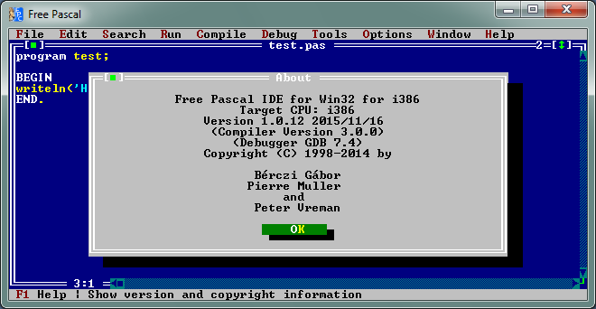
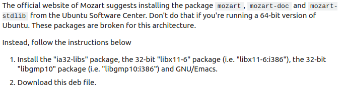
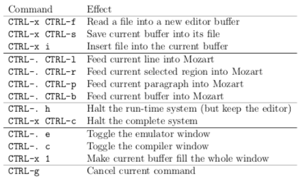
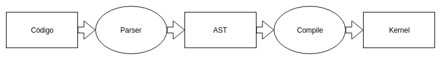

Kozily
Un entorno de desarrollo y máquina virtual de Oz
Matías Piano
- Backend developer @ Mercado Libre
- Estudiante FIUBA desde 2003
- Viaja a Australia mañana
En una galaxia lejana
¿Qué problemática tratamos?
“Aprender a programar es difícil”
- Todo estudiante de informática
Causas
- Complejidad innata
- Diversidad de lenguajes y paradigmas
- Diversidad de entornos y plataformas
- Tooling

Oz
- Lenguaje multiparadigma
- Plataforma de ejecución explícita
- Kernel con semántica operacional simple
- Concurrencia nativa
local Map in
fun {Map L F}
case L of H|T then {F H}|{Map T F}
else nil
end
end
{Map [1 2 3] fun {$ X} X * 2 end}
end
Multiparadigma
- Programación procedural declarativa
- Programación funcional
- ADT's con estado
- Objetos
Modelo de ejecución
- Execution stacks
- Immutable store
- Mutable store
- Trigger store
Concurrencia nativa
local ProcessData S P in
P = {NewPort S}
thread
{Send P 10}
end
thread
case S
of H|T then
{ProcessData H}
end
end
end
- Complejidad innata
- Diversidad de lenguajes y paradigmas ✔
- Diversidad de entornos y plataformas ✔
- Tooling
Mozart
IDE y entorno de ejecución de Oz


Kozily
- Sin instalación
- Simple de usar
- Modelo de ejecución interactivo
DEMO
¿Cómo lo hicimos?
Metodología
¿Cómo lo hicimos?
Continuous delivery
¿Cómo lo hicimos?
Modelado
El proceso de compilación

¿Cómo lo hicimos?
Interfaz de Usuario
¿Cómo lo hicimos?
Plataforma
Proximos pasos
Licencia MIT
- Lo que quedó afuera
- WebAssembly
- Hub para el estudiante